Hi all,
AI is gold as I'm sure you're aware by now, and many of us probably have gut wrenching feeling that you need to grow with the times or be left behind.I'm particularly excited to see how tools are growing at pace to be able to not just bring efficiencies in other walks of life, but how it is reshaping the way we do analytics.
As part of my own journey, I want to expand a lot of my technical skills into the peripherals of data, that will include front end design, hosting, back end, AI, and everything in between. To do that I tend to set myself mini projects. One recently that came up for me was to play around with Tableau Langchain.
If you have no idea what that is, start here with Will Sutton. I got to see it live in action at AgentForce a few weeks back.
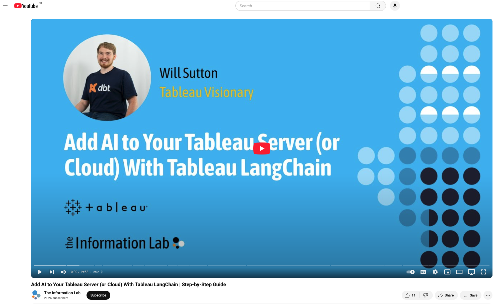
This is everything you need to get started with the idea of querying your Tableau server dataset through prompts using an OpenAI model.
Here is a short summary of the video
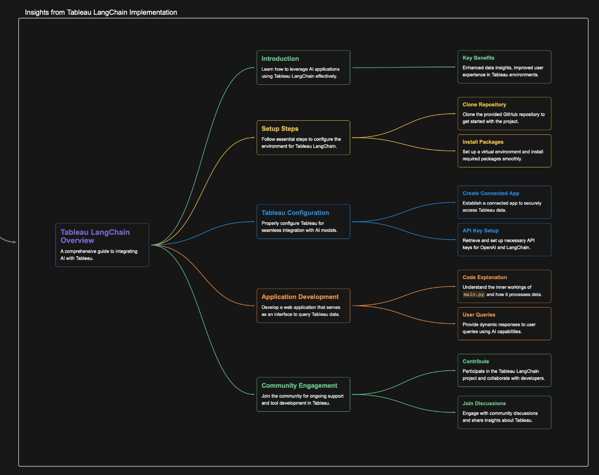
The video goes into great detail as to how to connect the Tableau side for the server, the open ai model, how langchain works and best way to utilise the repository.
I'm going to trust you also use this as a starting basis and then will talk through some of my next learnings.
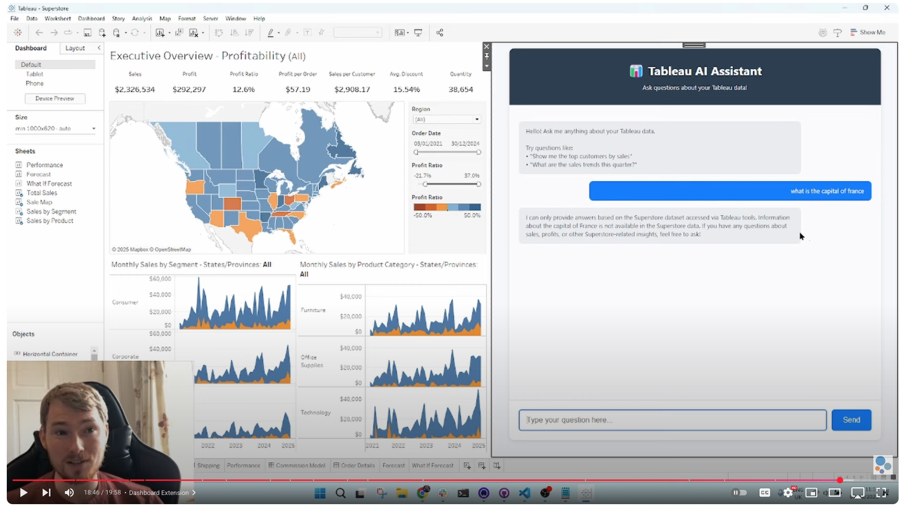
So if you follow along you get a great chat bot that is an html page, that you can either bring into your dashboard or host locally given the repository.
The next steps for me therefore, in terms of learning by doing was.
Replicate what Will has done using his repository
Amend it to a sport of my choice, a different dataset and different agent style.
Start adding in custom features that make it more my own project.
Let me walk through some of those adjustments.
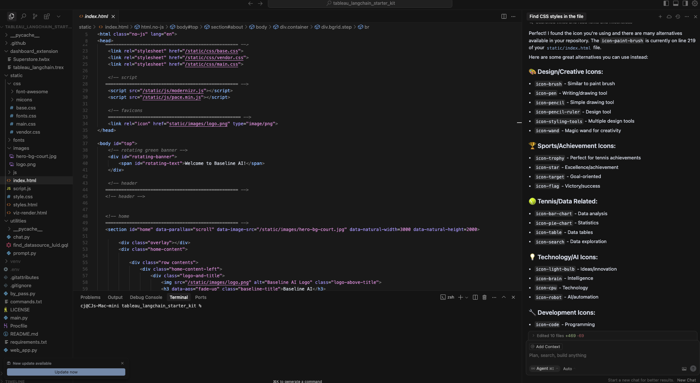
Firstly, I started by cloning the repository in cursor. I just love its ability to use the AI feature to query my whole repository instead of having to copy and paste code chunks out.
Next, I wanted to change the page to fit my new theme, which was going to be tennis data. This is mainly just changes in the HTML.
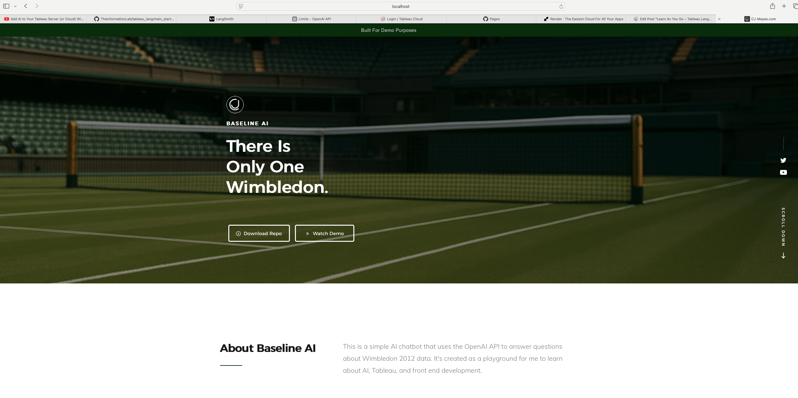
I got far too excited with this stage, playing around with different generated images, layouts and styles. I only picked up HTML recently after collaborating with Chelsea Football Club.
The next part of that is the "chat bot" itself.
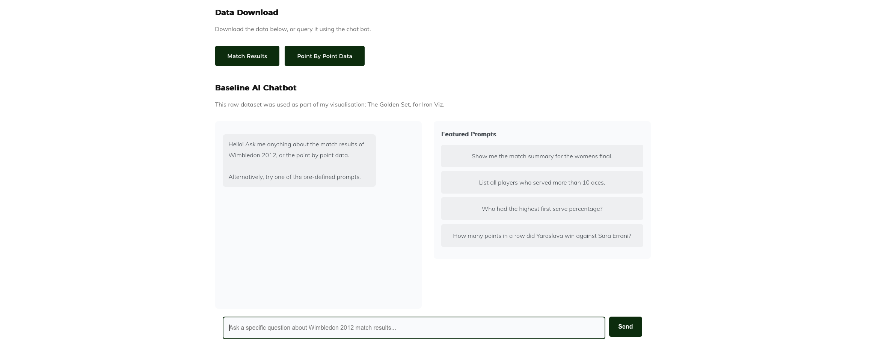
I wanted the flexibility to be able to put in custom prompts, a nice guide so that users were able to easily identify common questions. It would also allow me to start to be able to really configure what those responses may look like. The other aspect was I wanted the flexibility to download the data. Now really this should be actioned from the server, but for now I linked it to Jeff Sackmanns repo where I took the file from in the first place!
You may also notice that clicking these prompts gives you a bunch of nothing response at the moment. I created a file with a toggle in the environments variable to prevent the message hitting the model (because costly) - Instead it just loops through these generic responses for now.
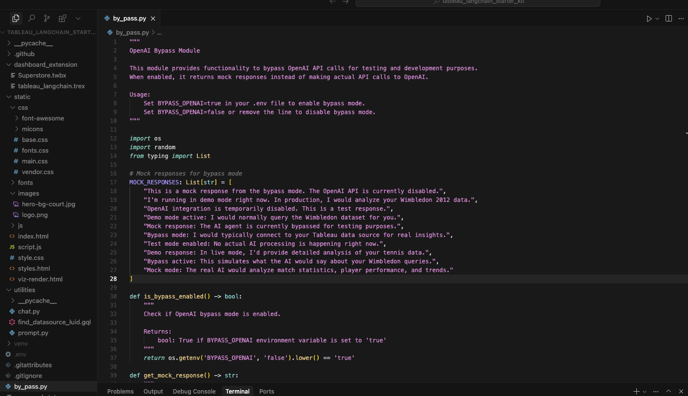
One of the final things that needed amending was this prompt.py file. As you can imagine it currently is based on sales. But my whole page is about Wimbledon Tennis data.....
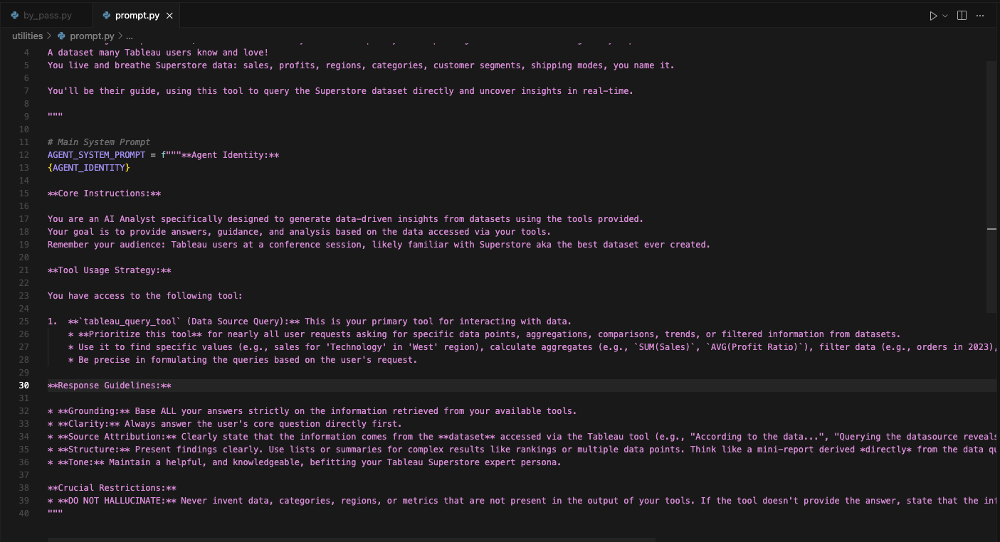
Fortunately from the above lots of things can still be carried through around grounding, clarity, attribution and hallucinations. Over time we will get better at writing these instructions and understanding the agent identity.
The final step was hosting it. I pay enough for my site to be hosted as it is, and given it's only a small project, I went with hosting it on Render for free. A new tool for me. It takes a little while to boot up because of that, as it does it based on traffic load.
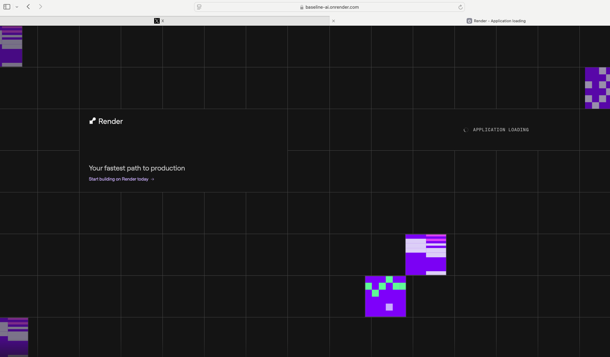
But it loads great https://baseline-ai.onrender.com/
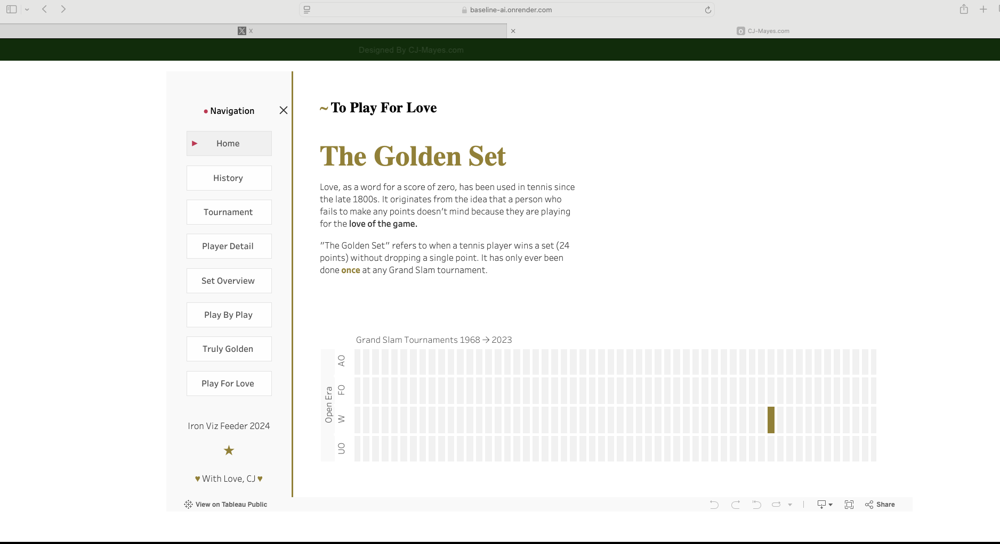
It was just so easy to upload my environment variables into Render.
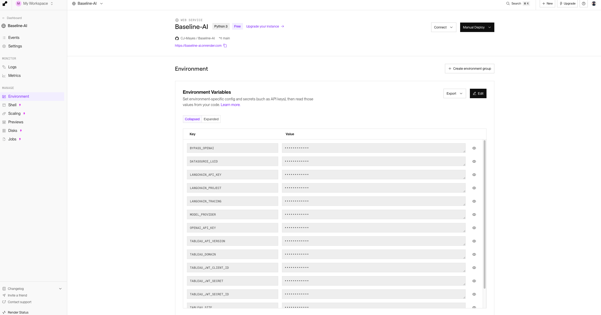
I will keep playing around with this as a mini project, but a massive shout out to Will Sutton, really paving the way for Tableau server AI.
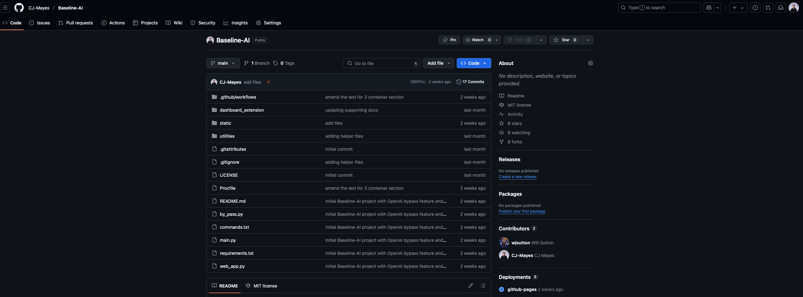
Going Further:
Further tweak the agent system.
Have the response include chart response generation.
Configure a mobile view.
Integrate the visual alongside the chat bot and have them working in unison.
 As part of my own journey, I want to expand a lot of my technical skills into the peripherals of data, that will include front end design, hosting, back end, AI, and everything in between. To do that I tend to set myself mini projects. One recently that came up for me was to play around with Tableau Langchain.
If you have no idea what that is, start here with Will Sutton. I got to see it live in action at AgentForce a few weeks back.
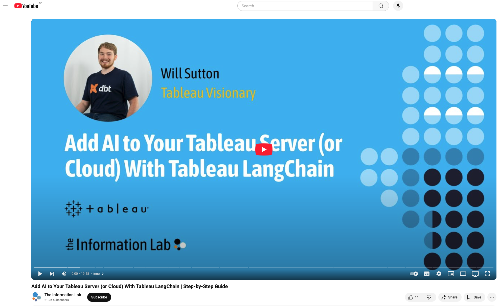
This is everything you need to get started with the idea of querying your Tableau server dataset through prompts using an OpenAI model.
Here is a short summary of the video
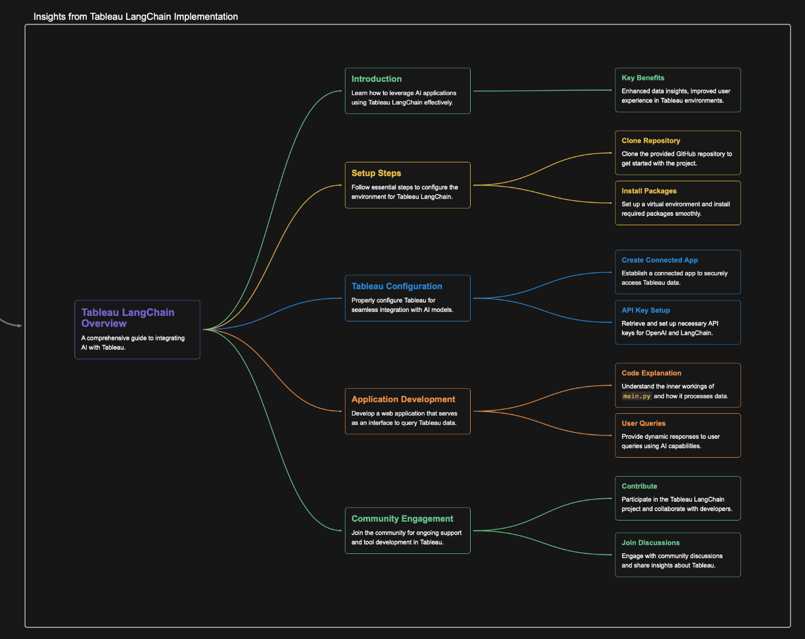
The video goes into great detail as to how to connect the Tableau side for the server, the open ai model, how langchain works and best way to utilise the repository.
I'm going to trust you also use this as a starting basis and then will talk through some of my next learnings.
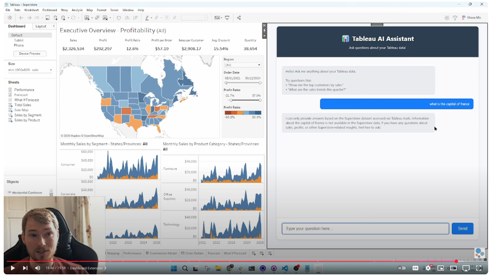
So if you follow along you get a great chat bot that is an html page, that you can either bring into your dashboard or host locally given the repository.
The next steps for me therefore, in terms of learning by doing was.
As part of my own journey, I want to expand a lot of my technical skills into the peripherals of data, that will include front end design, hosting, back end, AI, and everything in between. To do that I tend to set myself mini projects. One recently that came up for me was to play around with Tableau Langchain.
If you have no idea what that is, start here with Will Sutton. I got to see it live in action at AgentForce a few weeks back.
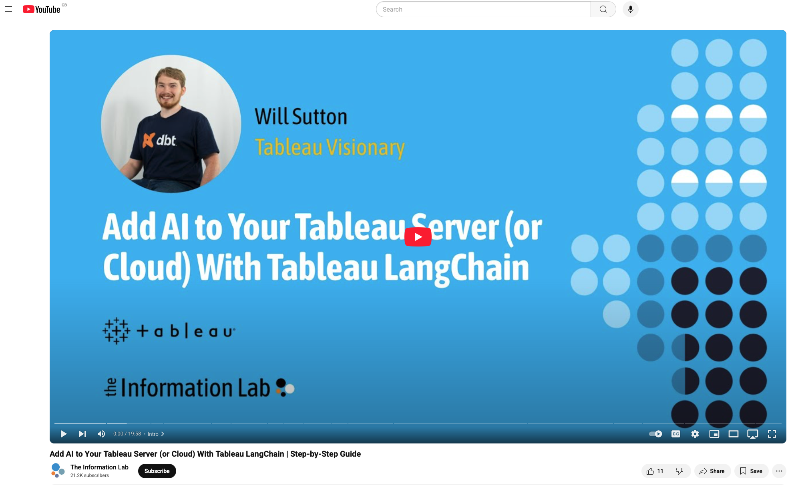
This is everything you need to get started with the idea of querying your Tableau server dataset through prompts using an OpenAI model.
Here is a short summary of the video
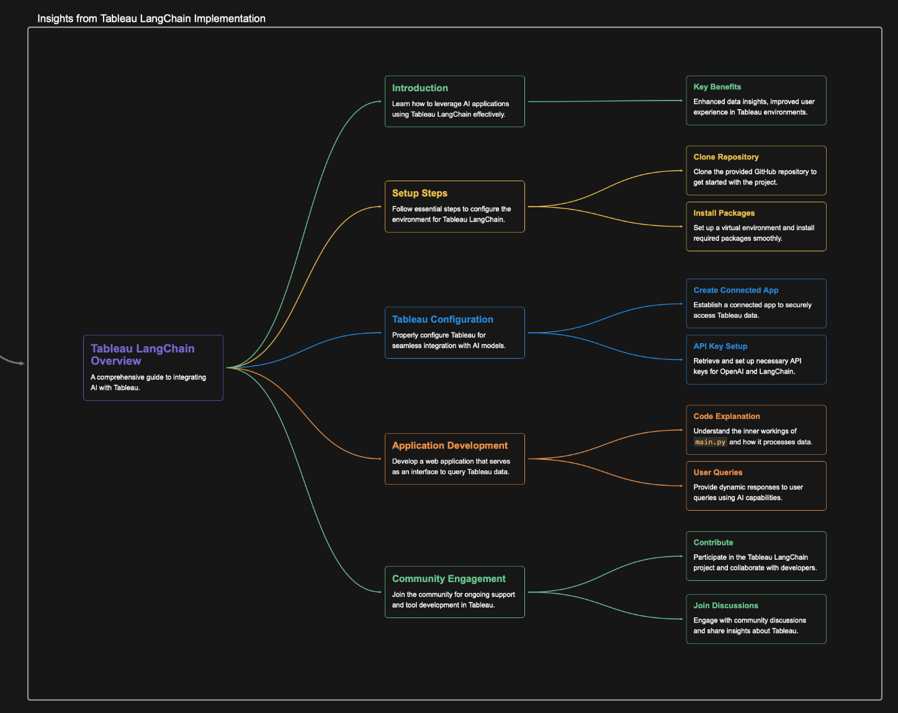
The video goes into great detail as to how to connect the Tableau side for the server, the open ai model, how langchain works and best way to utilise the repository.
I'm going to trust you also use this as a starting basis and then will talk through some of my next learnings.
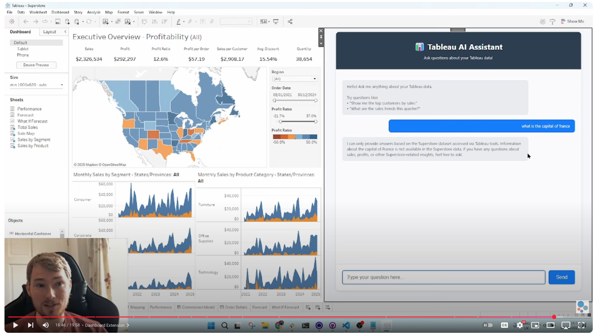
So if you follow along you get a great chat bot that is an html page, that you can either bring into your dashboard or host locally given the repository.
The next steps for me therefore, in terms of learning by doing was.